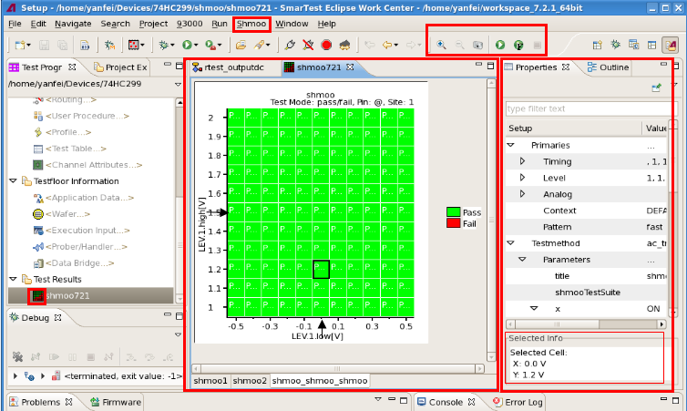

The interface of the Shmoo Tool
The following picture shows the interface of the Shmoo Tool:

After you opened the Shmoo Tool with a shmoo file,
- As seen in the left box, a new tab opens in the editor view, regarded as a shmoo editor. Its
name is the same as the shmoo file.
The shmoo editor can have multiple shmoo pages (see the bottom of the shmoo editor). Shmoo pages are used to display shmoo plots. The associated shmoo tests are set up in the corresponding Properties view displayed in the right box of the above picture.
To create, rename, delete shmoo pages, and overlay shmoo plots, see Commands in the bottom bar of the Shmoo Tool.
- As seen in the right box, the Properties view for a shmoo page is used to:
- Set up shmoo tests.
- The Selected Info panel in the Properties view displays the coordinates for the cells selected on a shmoo plot on the shmoo page.
- On the shmoo plot shown in the above picture, the arrows on the X and Y axes indicate the primary settings of the related shmoo test.
- A new menu, Shmoo, shows in the menu bar.
The Shmoo menu contains the commands to execute a shmoo test, zoom a shmoo plot, and take a picture of both the current shmoo plot and the setups.
- New shortcuts show in the toolbar, which are the shortcuts for
the execution, zoom and snapshot commands.Note The shmoo tool icon (
 ) (seen from the above picture) is used to open, save and load shmoo files. Refer to
Commands in the shmoo tool icon.
) (seen from the above picture) is used to open, save and load shmoo files. Refer to
Commands in the shmoo tool icon.
Functional changes
- Introduced in SmarTest 7.2.0
- SmarTest 7.2.1: The interface is changed to use the Properties view to set up shmoo tests and view the coordinates of the selected cells.
- SmarTest 7.2.1: Adds arrows on the shmoo plot to indicate the primary setups of the shmoo test.